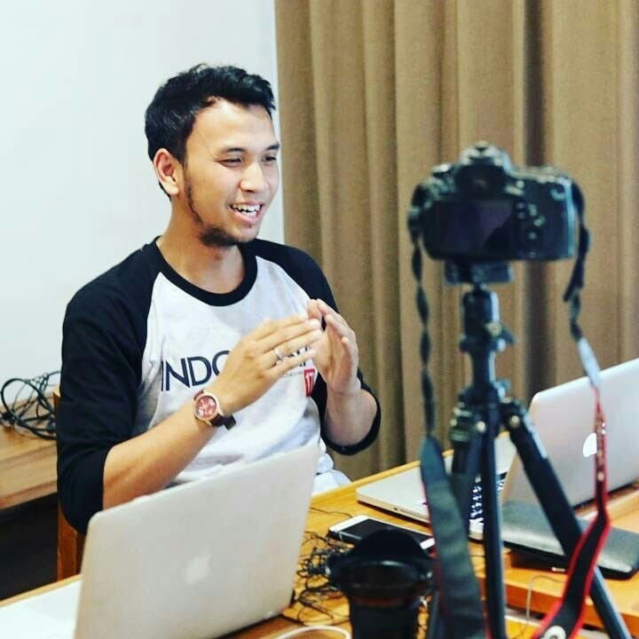

TINGKATKAN PENJUALANMU s.d 10x LIPAT dengan digital marketing!!! |
|
Salah satu hal penting yang perlu dilakukan untuk meningkatkan penjualan produk adalah memperluas jangkauan penjualan produk. Yang sering dilakukan oleh para pemilik produk adalah mengikuti acara, pameran atau kegiatan apapun itu untuk mendapatkan sorotan pada produknya. Masalahnya, apakah acara yang diikuti tepat sasaran dan bisa menghasilkan konversi yang baik? dan pada umumnya, biaya yang dikeluarkan untuk mengikuti kegiatan tersebut cukup mahal. Untungnya, ada 'marketing tool' yang dapat membantu mengenalkan produk kepada pembeli potensial, yang dinamakan "Digital Marketing", dimana biaya yang dikeluarkan akan secara efektif digunakan HANYA kepada pembeli yang ditargetkan, bisa dilakukan setiap hari, relatif jauh lebih murah dan BISA KAMU LAKUKAN SENDIRI!!! |
|
Pelajari Langkah-langkahnya di workshop kami, dengan mentor yang kompeten! |
'The Internet is becoming the town square for the global village of tomorrow"
-Bill Gates-
PEMATERI
ADWIN
Sr Digital Marketer - ENABLER INDONESIA
|  | Menghasilkan Omset Ratusan Juta Rupiah dari Digital Marketing |
|
Mengawali karir di bidang digital marketing dengan berjualan produk, Adwin berhasil mencetak omset ratusan juta |
|
Efisiensi Biaya periklanan dalam Digital Marketing |
|
|
Membaca data dan optimasi iklan menjadi salah satu spesialisasi Adwin, sehingga bisa meminimalisir periklan, pencapaian terbaiknya Adwin berhasil mendapatkan lead dengan harga ribuan rupiah! |
|
Funneling dan Data Capture |
|
|
Adwin memiliki kemampuan untuk menggiring audience iklannya untuk melakukan konversi sesuai yang diharapkan, dan juga mendapatkan data-data yang dibutuhkan. |
JADWAL WORKSHOP
| JADWAL WORKSHOP |
Timeline
Pilihlah jadwal Workshop yang paling sesuai dengan lokasi anda
| Workshop Digital Marketing - Facebook | 7 Desember 2019 |
| Bandung Eduplex CoWorking Space - Dago Bandung mohon hadir 30 menit sebelum registrasi 08.30 registrasi 09.00 - 17.00 Workshop |
|
| 8 Desember 2019 | Workshop Digital Marketing - Facebook |
| Jakarta Eduplex CoWorking Space - Dago Bandung mohon hadir 30 menit sebelum registrasi 08.30 registrasi 09.00 - 17.00 Workshop |